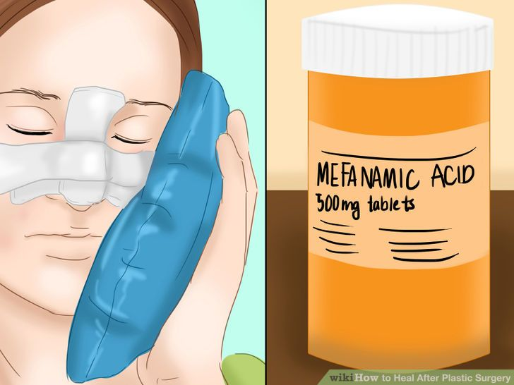
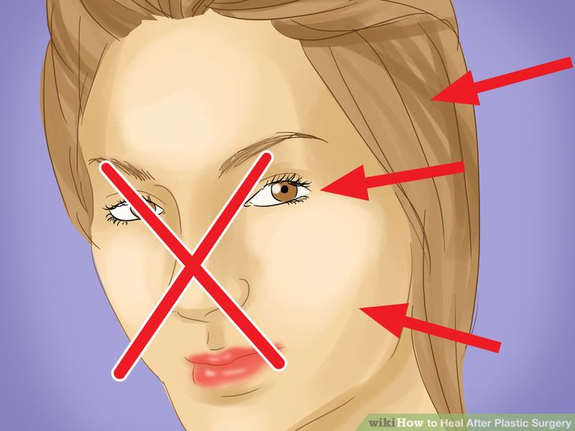

How to heal after plastic surgery?
Read this carefully. Because you khow...
Part 1. Follow medical steps for healing

Speak to your plastic surgeon
Some plastic surgery procedures only take days to recover from (the more minor ones), while others take weeks or even months. It is important to speak to your plastic surgeon prior to the procedure to know what to expect in terms of your recovery. It will likely impact many other spheres of your life, such as your work life and ability to go out with friends, so it is important to be able to plan for this.
Part 2. Follow other strategies for healing
Plastic surgery is generally done in hopes of altering one's appearance.
However, it is important to note that a perceived "improvement" in appearance will not equate to perfection. There is only so much that can be done surgically to change one's appearance, so if you are expecting perfection you will be setting yourself up for disappointment.
Part 3. Follow other strategies for healing

Your family and friends can be an important moral support
Your family and friends can be an important moral support, especially during the initial stages of healing. You may have pain, trouble completing ordinary tasks around the house, and/or potential feelings of disappointment as the positive results of your surgery will often not be seen fully until some healing has taken place, potentially months down the line. (In other words, plastic surgery tends to look worse before it looks better, as your body needs to heal the wounds and get rid of the swelling, so support during this time is key).
Get back to home page